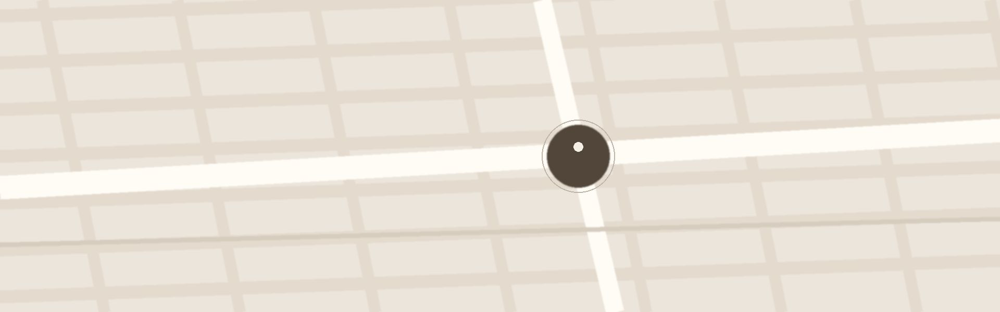

RESPECT
타고난 결을 존중합니다
무엇을 더할지보다, 무엇을 남길지 먼저 정합니다.
여울은 눈꺼풀의 구조와 조직을 가능한 한 보존하고, 원래의 인상이 살아 있는 설계를 합니다.
About Yeoul
여울성형외과는 눈의 구조와 인상의 균형을 함께 보고,
그 사람다운 변화를 설계하는 곳입니다.
빠른 결과보다 오래 편안한 결과를
기준으로 합니다.
Han Seoyul, M.D.
여울성형외과 대표원장
“ 좋은 변화는
더 많이 바꾸는 데서 오지 않고,
그 사람에게 어울리는
균형에서 시작됩니다.”
- 한서율 원장 -
Our Standard
빠른 결과보다 오래가는 결과를 고릅니다.
여울이 모든 수술에서 같은 무게로 지키는 기준입니다.
RESPECT
무엇을 더할지보다, 무엇을 남길지 먼저 정합니다.
여울은 눈꺼풀의 구조와 조직을 가능한 한 보존하고, 원래의 인상이 살아 있는 설계를 합니다.
SUBTLE
변화는 분명하게, 수술한 티는 덜 나게.
절개 위치와 봉합 간격까지 계산해 시간이 지날수록 자연스럽게 가라앉는 결과를 봅니다.
PRECISE
수술을 여러 개 더한다고 결과가 좋아지지는 않습니다.
하지 않아도 되는 것은 권하지 않는 것, 여울이 지키는 절제의 기준입니다.
HARMONY
소극적인 수술이 늘 정답은 아닙니다.
과함과 부족함 사이, 얼굴 전체의 균형이 맞는 지점을 찾습니다.
Our Space
편안한 상담과 차분한 수술을 위해 꾸민 공간입니다.
Contact
편하게 찾아오실 수 있도록
위치와 진료 시간을 안내드립니다.

지도 앱에서 보기